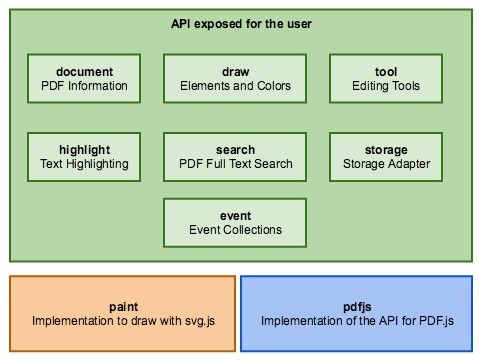
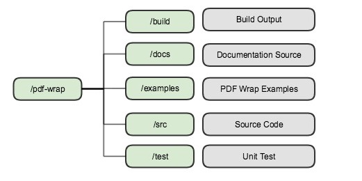

Development Guide
Authors
Nicolas Märchy
Version 0.0.1
Copyright © 2018 studer + raimann ag, Creative Commons Attribution-ShareAlike 4.0 International License.
Prerequisites
- Yarn - https://yarnpkg.com/lang/en
- Node.js - https://nodejs.org/en/
- MkDocs - https://www.mkdocs.org/
- ghp-import - https://github.com/davisp/ghp-import
You need ghp-import on your PATH, otherwise you won't be able to publish the documentation.
Architecture

The API exposed to the user defines mainly interfaces a user can use. In contrast to the paint, which implements the possibility to draw, is only used internal of PDF Wrap. The pdfjs is the PDF.js implementation for the API.
Displaying PDF Pages
The PDF pages are displayed by PDF.js. But the highlight as well as the drawing are displayed by PDF Wrap.
Every page is displayed in a specific way.

HIGHLIGHT LAYER
This layer contains any text highlighting with a 100% opacity. It is beneath the actual
rendered PDF page, so it won't cover the text.
PDF Layer
Is the actual PDF page rendered as svg by PDF.js.
HIGHLIGHT LAYER TRANSPARENCY
Is the same as the HIGHLIGHT Layer but with less opacity (about 40%). This layer
is required to highlight text which is not on a white background. With only
the HIGHLIGHT LAYER, the highlight would not be visible at all, because of the
non-transparent background of the PDF LAYER. The transparency is required
to not cover the PDF LAYER completely.
DRAW LAYER
The layer contains all drawings made by a user.
TEXT LAYER
Is the invisible actual text of the PDF page. Is rendered by PDF.js and
enables the text selection, because on the PDF LAYER is no text selection
available. Must be invisible, because its only purpose is the text selection.
The text itself may not have the correct font or exact position on the page.
Directory Structure

1. /pdf-wrap - Root
- The PDF Wrap root directory
- Every single file and directory of PDF Wrap
- Directly in this directory are configuration files like
package.jsonortsconfg.json
2. /build - Build Output
- Contains all generated output files
The /build directory has a specific structure itself. Read more about build directory
3. /docs - Documentation Source
- Contains the documentation's source files
4. /examples - PDF Wrap Examples
- Contains examples of how to use PDF Wrap
- Contains a Dev Viewer example mainly used for development
5. /src - Source Code
- Contains the source code of PDF Wrap
- This also contains type definition files of libraries which don't have type definitions them-self
6. /test - Unit Test
- Contains unit test files
- This also contains files with Mock object of for example interfaces
- Unit Test files must end with
.spec.ts - Mock files must end with
.mock.ts - Only files ending to
.spec.tsor.mock.tsare picked up by Typescript
build directory
The build directory is the output directory for any file generated through the Tasks.
It is structured in a specific way.

1. /javascript - Transpiled Code
- Directly transpiled typescript code from
srcandtestdirectory - No uglifying
- No dependencies
2. /libs - Production Ready
- This code is production ready
- Uglified
- With dependencies and additional resources like CSS files
3. /distributions - Distribution Ready
- This code is ready to be distributed
- Uglified
- With dependencies and additional resources like CSS files
- With README file
- With CHANGELOG file
- With modified package.json file
Tasks
PDF Wrap uses Gulp for its task management.
The gulpfile.js uses the app.properties.js file to get specific directories.
The app.properties.js file just exports an object, which resolves important directory paths absolute.
build Tasks
The build tasks contain tasks all around building the project.
clean
Cleans the build by removing the build directory.
build
Transpiles and lints typescript and runs the tests.
package
Packs the project ready to use. Copies resources needed and uglifies the javascript code.
repackage
Same as package but executes clean before
uglifyJS
Uglifies the javascript code
docs Tasks
The docs tasks contain tasks about generating or publishing the documentation.
mkdocs
Generates the MkDocs documentation and includes the typedoc.
typedoc
Generates the typedoc api documentation.
publishDoc
Generates and publishes the MkDocs.
other Tasks
The other tasks contain tasks which have more a general purpose, rather than something specific.
copyDependencies
Copies the projects dependencies.
copyCMaps
Copies the cMaps of PDF.js
copyPDFJS
Copies the PDF.js files needed.
copyCSS
Copies and concat the CSS files needed.
transformPackageJSON
Declares every dependency used in package.json as bundledDependencies.
This is needed, because PDF Wrap does not come with a bundled js file.
Therefore npm needs to know, that the dependencies are bundled.
In addition, devDependecies are cleared, because they are not needed for production.
transpileTypescript
Transpiles typescript to javascript and generates inline source maps.
npm Tasks
The npm tasks contain tasks used for npmjs.
pack
Runs yarn pack for the build/distributions/npm directory.
publish
Publishes the project to npm.
verification Tasks
The verification tasks contain tasks about testing.
test
Runts the unit tests.
lint
Lints the typescript code.
Logging
PDF Wrap uses typescript-logging.
The configuration abstracted to the user, to enable a unified log output.
The logger name
The logger name has a specific scheme in order to enable a unified and an exact as possible log output.
<namespace>/<file-path>:<class-name>
<namespace>
The namespace is always the same value: ch/studerraimann/pdfwrap
<file-path>
The path of the file where you create the logger. The file name must be without the extension
and the file path is relative to the src directory of PDF Wrap.
<class-name>
The class or function name where you create the logger.
Example: Class
Assuming the class is declared in the file src/services/my-service.ts.
export class MyService {
private readonly log: Logger = LoggerFactory.getLogger("ch/studerraimann/pdfwrap/services/my-service:MyService");
constructor() {
this.log.info(() => "Call constructor of MyService");
}
Example: File
Assuming the function is declared in the file src/services/my-service.ts.
export function doSomething() {
const log: Logger = LoggerFactory.getLogger("ch/studerraimann/pdfwrap/services/my-service:doSomething");
log.info(() => "Call doSomething");
}
You should always use the lambda expression for a log message, because this way it will only be executed when its needed.
Please note, that the
Loggertype must be imported fromtypescript-logging, but theLoggerFactoryclass is fromsrc/log-config.ts.
Why using it this way?
PDF Wrap provides an API to configure the logging output way down to a function or class. This way, the logger names are unified and as a result the configuration can be applied to every logger.
Read the Reference Documentation about logging to understand the concept better.
MkDocs
The PDF Wrap documentation is built with MkDocs.
The documentation contains the following parts.
Home
The index of the documentation. Contains a quick start and link to other parts of the documentation.
Guides
Contains guides with a specific example of a specific part of PDF Wrap.
For example: How to implement a Storage Adapter
Reference Documentation
Contains the full in-depth documentation about how to use PDF Wrap.
Development Guide
Contains guides about the source code and how to develop with PDF Wrap.
How to publish the documentation
TODO: Write manual
Unit Testing
PDF Wrap uses Mocha to run its tests. In addition, chaijs is used to assert test results. And for mocking classes, ts-mockito is used.
Where to write tests
All unit tests are declared in the test directory. This directory remains
in the same structure like the src directory. Test files must end with .spec.ts and
any files containing mock classes (if needed) must end with .mock.ts.
The file name of a unit test is the same where the class or function you wanna test, is declared.
For Example
src/pdfjs/my-service.ts contains a function called doBar you wanna test.
test/pdfjs/my-service.spec.ts must be the file name of the unit test.
Test style
Mocha is a BDD (Behaviour Driven Development) testing Framework. Therefore we organize our test like this.
Testing classes
The unit test structure of a class
describe('the class you test', () => {
describe('the method you test', () => {
describe('the case of the method you test', () => {
it('should do what you expect', () => {
// AAA
});
});
});
});
This way you have a group per class, per method and per case of a method.
The it block should always start with "should".
For example, if you expect an error to be thrown: it("should throw an error indicating that ...", () => { ... })
AAA stands for Arrange, Act and Assert, which means a test should be structured in that way.
- Arrange everything for the test like mocks
- Act, which means that you invoke the method or function you wanna test
- Assert if everything worked like expected
Pro Tip: Mark where your Arrange stops and your Act starts or where your Act stops and your Assert starts
with two blank lines between them.
Sometimes you just can not have this structure. Especially when you test for errors, because you have to invoke the tested method or function during the assert. AAA is more a guide line rather than an absolute rule.
Testing functions
When you test functions its pretty much the same structure, but you leave out the class describe.
describe('the function you test', () => {
describe('the case you test', () => {
it('should do what you expect', () => {
// AAA
});
});
});
Mocha
Mocha has a cli options file which will be used: test/mocha.opt.
This file contains command line arguments which should be used when running mocha.
Read more about Mocha Options
ts-mockito
ts-mockito is a mocking library for Typescript. A big advantages is, that you don't lose the type definitions like you would for example with Sinon.js
Mocking interfaces
Because interfaces are a Typescript only thing and are not available during the runtime, ts-mockito can not mock interfaces. So you have to create a mock class of the interface you wanna mock your-self.
Because ts-mockito can mock classes, you only have to create a mock class as an empty implementation, rather than a mock class for each case you wanna test.
Example mocking interface
This is our interface
export interface MyService {
bar: number;
readonly foo: number;
doBar(): void;
}
You create a mock class for it
export class MockMyService implements MyService {
get bar(): number {
throw new Error("Not implemented test stub");
}
set bar(_: number): void {
throw new Error("Not implemented test stub");
}
get foo(): number {
throw new Error("Not implemented test stub");
}
doBar(): void {
throw new Error("Not implemented test stub");
}
}
Please note, that all implementations, including the properties, do throw an Error
indicating that this test stub is not implemented. This makes sure you do not
have a side effect when you forgot to manipulate a method or property.
In addition, parameters should be renamed to a _ symbol, otherwise the Typescript compiler would report an error.
Read more about Unused Parameters
Please note, that ts-mockito can mock an abstract class, but only manipulate non-abstract methods. Therefore, an interface can not be mocked by creating an abstract class of it and use the abstract class as the mock class.
Miscellaneous
CSS
Whenever you have to declare CSS you must add it in the file src/assets/css/pdf-wrap.css.
When the project is be built, this file will be concat together with the CSS file of PDF.js.
Custom type def
Whenever small type definitions are needed, they can be written in the src/declarations.ts file.
But it should not contain too much type defs of the same library.
If that's the case, create a directory in the src/declarations directory named after the library
you wanna use and write your type definitions there.
Unused Parameters
Because our tsconfig.json enables the noUnusedParameter flag, you would get an error
whenever you don't need a parameter. Instead of just not declare the parameter,
you should rename it with a _ symbol. This way the Typescript compiler will not report an error
and a developer does know, there is a parameter but it is not used.
In case you have multiple parameters you don't need, just add a additional _ to the second unused parameter.
Example
// unused parameter
doBar(_: number): void { ... }
// two unused parameters
doBar(_: nmuber, __: number): void { ... }
// three unused parameters
doBar(_: number, __: number, ___: number): void { ... }
// two unused with one used parameter
doBar(_: number, usedParameter: number, __: number): void {
console.log(usedParameter);
}
// and so on
This also can be applied to any case where a parameter is unused, whenever its a lambda expression, a method to implement or even a setter.
Type Doc
The type doc should be written in most cases. There are exceptions like getters / setters. In addition to the the description in a type doc, there should be the following type doc annotations:
@author your-name <your-email>- e.g.@author Max Muster <mm@gmail.com>@since current-pdfwrap-version- e.g.@since 1.0.0@internal- is optional and should be declared whenever something is only used intern of PDF Wrap
PDF.js
PDF Wrap makes a high usage of PDF.js, which is written in Javascript.
The distribution of PDF.js is only the parsing functionality. But we also use their PDF Viewer. Because of that, some parts of the PDF.js node module will be copied to the build output.
Type def
Definitelytyped contains a type def for PDF.js, but unfortunately it is not correct.
Therefore we have our own type def of PDF.js, located in src/declarations/pdfjs.
This type def is not complete and contains only what we need right now.
Whenever you need more of the API of PDF.js, you have to extend the type def.